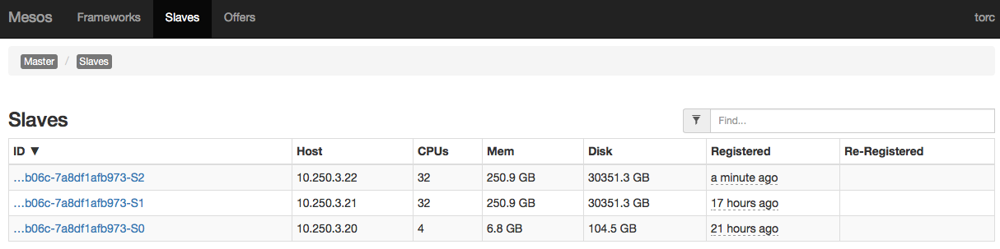

Provision Compute Node
This will guide you through the installation of ToRC related services and software packages on a ToRC compute node.
Prerequisites
- Verify that ToRC-Controller and services are up and running on your wedge. Information can be found in ToRC Core Software Installation
- Compute node has Ubuntu 14.04 installed
- Compute node has a fixed IP address assigned to your 10Gb port. That is based on our ToRC setup, change accordingly.
Verify /etc/network/interfaces, example for bladerunner1:
auto p2p2
iface p2p2 inet static
address 10.250.3.21
netmask 255.255.0.0
network 10.250.0.0
broadcast 10.250.3.255
gateway 10.250.1.1
dns-nameservers 10.250.3.20
dns-search homer.ave
-
On compute node verify
/etc/hosts, example bladerunner1:127.0.0.1 localhost bladerunner1
-
Admin user
bladerunnergot created on compute node - Reboot compute node in case you have changed any of the settings.
Software Installation
For this example we setup bladerunner1, check with your ToRC setup.
1. Ssh in to compute node
2. Clone torc-scripts
Install git and checkout repository
bladerunner@bladerunner1:~$ sudo apt-get install -y git
bladerunner@bladerunner1:~$ git clone https://github.com/att-innovate/torc-scripts.git
3. Run software install script
10.250.3.20 should correspond with the IP address of the wedge. Replace HOST_NAME with the correct hostname, for example bladerunner1.
bladerunner@bladerunner1:~$ cd torc-scripts/deploy/
bladerunner@bladerunner1:~/torc-scripts/deploy$ sudo ./install-compute.sh 10.250.3.20 HOST_NAME lab
4. Reboot
bladerunner@bladerunner1:~$ sudo reboot
5. Ssh back in to compute node and install ToRC related Docker containers
Btw, most of the subsequent calls require root privileges. I suggest to get in to a root shell.
bladerunner@bladerunner1:~$ sudo -s
Install containers:
bladerunner@bladerunner1:~$ cd torc-scripts/deploy/
bladerunner@bladerunner1:~/torc-scripts/deploy$ ./docker_build_slaves.sh
6. Verify Docker images
Check for the influxdb, datacollector, and charmander-pcp
bladerunner@bladerunner1:~$ docker images
Calico / Network-Plugin Configuration
1. Check that etcd on the Wedge is running. Additional
Information can be found in [ToRC Core Software Installation].core-software-installation
bladerunner@bladerunner1:~$ ping etcd.service.torc
2. Set environment to point to etcd running on the wedge.
bladerunner@bladerunner1:~$ cd ~
bladerunner@bladerunner1:~$ export ETCD_AUTHORITY=etcd.service.torc:2379
3. Start Calico
bladerunner@bladerunner1:~$ ./calicoctl node --libnetwork
4. Configure Calico and the Docker Network
That is only necessary when you install your first compute node! All subsequent nodes will get their information from etcd on the wedge.
Setup an IP address pool for the Docker containers.
bladerunner@bladerunner1:~$ ./calicoctl pool add 192.168.0.0/16 --nat-outgoing
You can verify if things are set up correctly with following call which should return information for one pool.
bladerunner@bladerunner1:~$ ./calicoctl pool show
Let Docker know about the Calico network plugin.
bladerunner@bladerunner1:~$ docker network create --driver calico --ipam-driver calico torc
Verify by listing known Docker networks. A network named torc should show up.
bladerunner@bladerunner1:~$ docker network ls
You can also check etcd for entries for docker and calico.
That’s it
That new compute node should show up on the Mesos UI in the list of slaves, example bladerunner2.

Next: Restart Scheduler